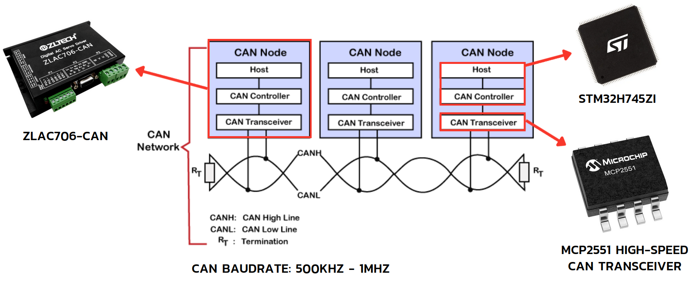
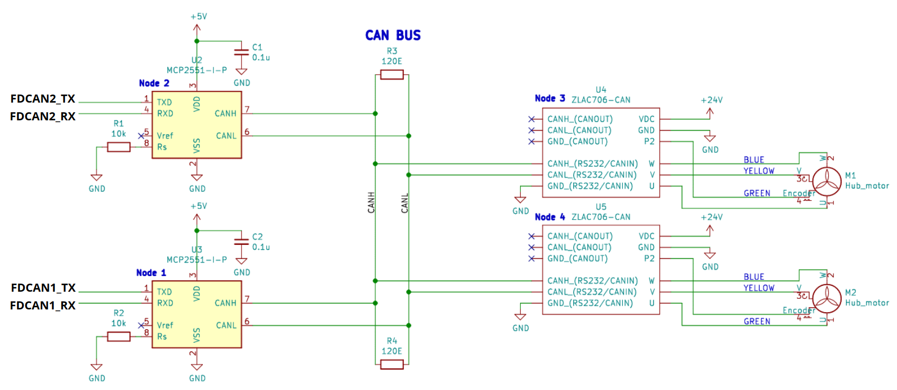

Hub Motor Interface
CAN Bus Communication
CAN communication is the method of communication where devices act as nodes compose of Host, CAN Controller and CAN Transceiver. ZLAC706-CAN act as 1 node but STM32H745ZI only act as Host and CAN Controller. So we need additional transceiver connect at the output of fdcan port to perform 1 node. The baudrate of CAN is also ranged from 500 kHz to 1 MHz
Hub Motor Driver Connection
Here’s the KiCad schematic of hub motor driver including STM32H745ZI fdcan port, can transceiver, can bus and hub motor.
STM32 FDCAN Specification
Frame format: Classic CAN
Baudrate: 500 kHz
Auto retransmission: Enable
Data length: 8 bytes
Left motor CAN ID: 0x11
Right motor CAN ID: 0x22
CAN Mask Filter (For detect specific ID)
Filter for detect 0x11 (Left motor)
FDCAN_FilterTypeDef sFilterConfig; sFilterConfig.IdType = FDCAN_STANDARD_ID; sFilterConfig.FilterIndex = 0; sFilterConfig.FilterType = FDCAN_FILTER_MASK; sFilterConfig.FilterConfig = FDCAN_FILTER_TO_RXFIFO0; sFilterConfig.FilterID1 = 0x11; sFilterConfig.FilterID2 = 0x7FF; /* For acceptance, MessageID and FilterID1 must match exactly 0x7FF*/ sFilterConfig.RxBufferIndex = 0;
Filter for detect 0x22 (Right motor)
FDCAN_FilterTypeDef sFilterConfig; sFilterConfig.IdType = FDCAN_STANDARD_ID; sFilterConfig.FilterIndex = 0; sFilterConfig.FilterType = FDCAN_FILTER_MASK; sFilterConfig.FilterConfig = FDCAN_FILTER_TO_RXFIFO1; sFilterConfig.FilterID1 = 0x22; sFilterConfig.FilterID2 = 0x7FF; /* For acceptance, MessageID and FilterID1 must match exactly */ sFilterConfig.RxBufferIndex = 0;
Hub Motor Function
These function are implemented base on ZLAC706-CAN speed mode in datasheet.
CAN communication test command:
RightMotor_TestCommand()
void RightMotor_TestCommand()
{
// Clear Tx data
TxData_Clear(TxData1);
// Set Working mode to Position mode (used as Test command)
TxData1[3] = 0x19; // internal address
TxData1[7] = 0x3F; // set position mode value
// Sent command to ZLAC706-CAN motor driver
if (HAL_FDCAN_AddMessageToTxFifoQ(&hfdcan1, &TxHeader1, TxData1) != HAL_OK) {Error_Handler();}
// Wait until tx message is received at the rx
TxWriteMsg1_isReturn = 0;
while (!TxWriteMsg1_isReturn);
}
Hub motor set speed mode:
BothMotor_Set_SpeedMode(float initial_right_speed_rpm, float initial_left_speed_rpm, uint8_t acc_time, uint8_t dec_time)
void BothMotor_Set_SpeedMode(float initial_right_speed_rpm, float initial_left_speed_rpm, uint8_t acc_time, uint8_t dec_time)
{
// Clear Tx data
TxData_Clear(TxData1);
TxData_Clear(TxData2);
// Set Working mode to Speed mode for right motor
TxData1[3] = 0x19; // internal address
TxData1[7] = 0x2F; // set speed mode value
// Set Working mode to Speed mode for left motor
TxData2[3] = 0x19; // internal address
TxData2[7] = 0x2F; // set speed mode value
// Sent command to ZLAC706-CAN motor driver
if (HAL_FDCAN_AddMessageToTxFifoQ(&hfdcan1, &TxHeader1, TxData1) != HAL_OK) {Error_Handler();} // declare more than 1
if (HAL_FDCAN_AddMessageToTxFifoQ(&hfdcan2, &TxHeader2, TxData2) != HAL_OK) {Error_Handler();}
// Set Acceleration and Deceleration for right motor
TxData1[3] = 0x13; // internal address
TxData1[6] = acc_time; // set acceleration = acc_time x 100ms
TxData1[7] = dec_time; // set deceleration = dec_time x 100ms
// Set Acceleration and Deceleration for left motor
TxData2[3] = 0x13; // internal address
TxData2[6] = acc_time; // set acceleration = acc_time x 100ms
TxData2[7] = dec_time; // set deceleration = dec_time x 100ms
// Sent command to ZLAC706-CAN motor driver
if (HAL_FDCAN_AddMessageToTxFifoQ(&hfdcan1, &TxHeader1, TxData1) != HAL_OK) {Error_Handler();}
if (HAL_FDCAN_AddMessageToTxFifoQ(&hfdcan2, &TxHeader2, TxData2) != HAL_OK) {Error_Handler();}
Motor_Set_TargetSpeed(initial_right_speed_rpm, initial_left_speed_rpm);
BothMotor_Enable();
BothMotor_EmergencyBrake();
}
Hub motor set target speed:
Motor_Set_TargetSpeed(float right_speed_rpm, float left_speed_rpm)
void Motor_Set_TargetSpeed(float right_speed_rpm, float left_speed_rpm)
{
// Clear Tx data
TxData_Clear(TxData1);
TxData_Clear(TxData2);
// Set Right motor target speed
TxData1[3] = 0x11; // internal address
uint32_t set_value = (fabs(right_speed_rpm) * 8192.0) / 3000; // calculate 32 bit set value from actual speed
if (right_speed_rpm >= 0){
set_value = ~set_value + 1; // reverse (two complement)
} else {
set_value = set_value; // forward
}
TxData1[4] = (set_value >> 24) & 0xFF; // set Byte4
TxData1[5] = (set_value >> 16) & 0xFF; // set Byte5
TxData1[6] = (set_value >> 8) & 0xFF; // set Byte6
TxData1[7] = set_value & 0xFF; // set Byte7
// Set Left motor target speed
TxData2[3] = 0x11; // internal address
set_value = (fabs(left_speed_rpm) * 8192.0) / 3000; // calculate 32 bit set value from actual speed
if (left_speed_rpm >= 0){
set_value = set_value; // forward
} else {
set_value = ~set_value + 1; // reverse (two complement)
}
TxData2[4] = (set_value >> 24) & 0xFF; // set Byte4
TxData2[5] = (set_value >> 16) & 0xFF; // set Byte5
TxData2[6] = (set_value >> 8) & 0xFF; // set Byte6
TxData2[7] = set_value & 0xFF; // set Byte7
// Sent command to ZLAC706-CAN motor driver
if (HAL_FDCAN_AddMessageToTxFifoQ(&hfdcan1, &TxHeader1, TxData1) != HAL_OK) {error = 2; Error_Handler();}
if (HAL_FDCAN_AddMessageToTxFifoQ(&hfdcan2, &TxHeader2, TxData2) != HAL_OK) {error = 3; Error_Handler();}
}
Hub motor enable:
BothMotor_Enable()
void BothMotor_Enable()
{
// Clear Tx data
TxData_Clear(TxData1);
TxData_Clear(TxData2);
// Enable the right motor
TxData1[3] = 0x10; // internal address
TxData1[7] = 0x1F; // set enable motor value
// Enable the left motor
TxData2[3] = 0x10; // internal address
TxData2[7] = 0x1F; // set enable motor value
// Sent command to ZLAC706-CAN motor driver
if (HAL_FDCAN_AddMessageToTxFifoQ(&hfdcan1, &TxHeader1, TxData1) != HAL_OK) {Error_Handler();}
if (HAL_FDCAN_AddMessageToTxFifoQ(&hfdcan2, &TxHeader2, TxData2) != HAL_OK) {Error_Handler();}
}
Hub motor release brake:
BothMotor_Release()
void BothMotor_Release()
{
// Clear Tx data
TxData_Clear(TxData1);
TxData_Clear(TxData2);
// Release the right motor with down time
TxData1[3] = 0x10; // internal address
TxData1[7] = 0x0F; // set release motor value
// Release the left motor with down time
TxData2[3] = 0x10; // internal address
TxData2[7] = 0x0F; // set release motor value
// Sent command to ZLAC706-CAN motor driver
if (HAL_FDCAN_AddMessageToTxFifoQ(&hfdcan1, &TxHeader1, TxData1) != HAL_OK) {Error_Handler();}
if (HAL_FDCAN_AddMessageToTxFifoQ(&hfdcan2, &TxHeader2, TxData2) != HAL_OK) {Error_Handler();}
}
Hub motor emergency brake:
BothMotor_EmergencyBrake()
void BothMotor_EmergencyBrake()
{
// Clear Tx data
TxData_Clear(TxData1);
TxData_Clear(TxData2);
// Emergency stop the right motor
TxData1[3] = 0x30; // internal address
TxData1[7] = 0x1F; // set emergency stop value
// Emergency stop the left motor
TxData2[3] = 0x30; // internal address
TxData2[7] = 0x1F; // set emergency stop value
// Sent command to ZLAC706-CAN motor driver
if (HAL_FDCAN_AddMessageToTxFifoQ(&hfdcan1, &TxHeader1, TxData1) != HAL_OK) {Error_Handler();}
if (HAL_FDCAN_AddMessageToTxFifoQ(&hfdcan2, &TxHeader2, TxData2) != HAL_OK) {Error_Handler();}
}
Hub motor read current:
BothMotor_Get_Current()
void BothMotor_Get_Current()
{
// Clear Tx data
TxData_Clear(TxData1);
TxData_Clear(TxData2);
// Get right motor current
TxData1[1] = 0xDC; // set tx read command
TxData1[3] = 0xE2; // internal address
// Get left motor current
TxData2[1] = 0xDC; // set tx read command
TxData2[3] = 0xE2; // internal address
// Sent command to ZLAC706-CAN motor driver
if (HAL_FDCAN_AddMessageToTxFifoQ(&hfdcan1, &TxHeader1, TxData1) != HAL_OK) {Error_Handler();}
if (HAL_FDCAN_AddMessageToTxFifoQ(&hfdcan2, &TxHeader2, TxData2) != HAL_OK) {Error_Handler();}
// Wait until tx message is received at the rx
TxWriteMsg1_isReturn = 0;
TxWriteMsg2_isReturn = 0;
uint64_t timeout = micros();
while (!(TxWriteMsg1_isReturn && TxWriteMsg2_isReturn)){
// 1 ms request timeout
if (micros() - timeout > 1000){
break;
}
}
}
Hub motor read speed:
BothMotor_Get_Speed()
void BothMotor_Get_Speed()
{
// Clear Tx data
TxData_Clear(TxData1);
TxData_Clear(TxData2);
// Get right motor speed
TxData1[1] = 0xDC; // set tx read command
TxData1[3] = 0xE4; // internal address
// Get left motor speed
TxData2[1] = 0xDC; // set tx read command
TxData2[3] = 0xE4; // internal address
// Sent command to ZLAC706-CAN motor driver
if (HAL_FDCAN_AddMessageToTxFifoQ(&hfdcan1, &TxHeader1, TxData1) != HAL_OK) {Error_Handler();}
if (HAL_FDCAN_AddMessageToTxFifoQ(&hfdcan2, &TxHeader2, TxData2) != HAL_OK) {Error_Handler();}
// Wait until tx message is received at the rx
TxWriteMsg1_isReturn = 0;
TxWriteMsg2_isReturn = 0;
uint64_t timeout = micros();
while (!(TxWriteMsg1_isReturn && TxWriteMsg2_isReturn)){
// 1 ms request timeout
if (micros() - timeout > 1000){
break;
}
}
}
Hub motor read position:
BothMotor_Get_Position()
void BothMotor_Get_Position()
{
// Clear Tx data
TxData_Clear(TxData1);
TxData_Clear(TxData2);
// Get right motor pulse
TxData1[1] = 0xDC; // set tx read command
TxData1[3] = 0xE8; // internal address
// Get left motor pulse
TxData2[1] = 0xDC; // set tx read command
TxData2[3] = 0xE8; // internal address
// Sent command to ZLAC706-CAN motor driver
if (HAL_FDCAN_AddMessageToTxFifoQ(&hfdcan1, &TxHeader1, TxData1) != HAL_OK) {Error_Handler();}
if (HAL_FDCAN_AddMessageToTxFifoQ(&hfdcan2, &TxHeader2, TxData2) != HAL_OK) {Error_Handler();}
// Wait until tx message is received at the rx
TxWriteMsg1_isReturn = 0;
TxWriteMsg2_isReturn = 0;
uint64_t timeout = micros();
while (!(TxWriteMsg1_isReturn && TxWriteMsg2_isReturn)){
// 1 ms request timeout
if (micros() - timeout > 1000){
break;
}
}
}
Runtime Test
Motor Set Speed Mode
runstarttime = micros();
//************************************
BothMotor_Set_SpeedMode(10, 10, 1, 1);
//************************************
runtime = micros() - runstarttime;
Runtime: 0.092 ms
Motor Read Position & Speed
runstarttime = micros();
//***********************************************
BothMotor_Get_Position();
BothMotor_Get_Speed();
//***********************************************
runtime = micros() - runstarttime;
Runtime: 1.135 - 1.226 ms
Motor Set Target Speed
runstarttime = micros();
//*********************************************************
Motor_Set_TargetSpeed(RightMotor_CmdVel, LeftMotor_CmdVel);
//*********************************************************
runtime = micros() - runstarttime;
Runtime: 0.022 ms